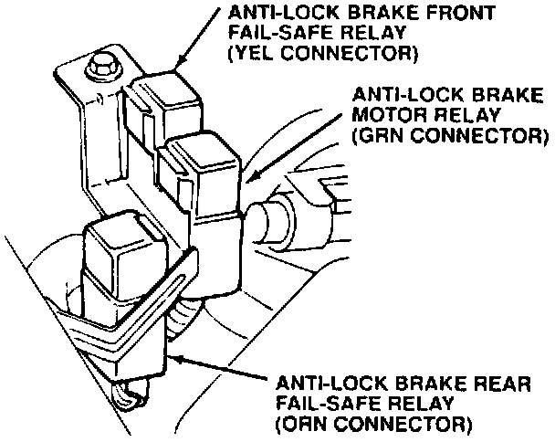
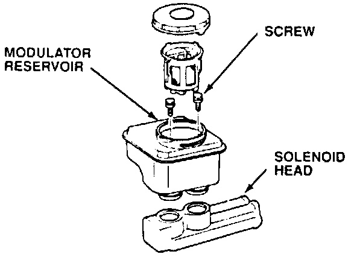
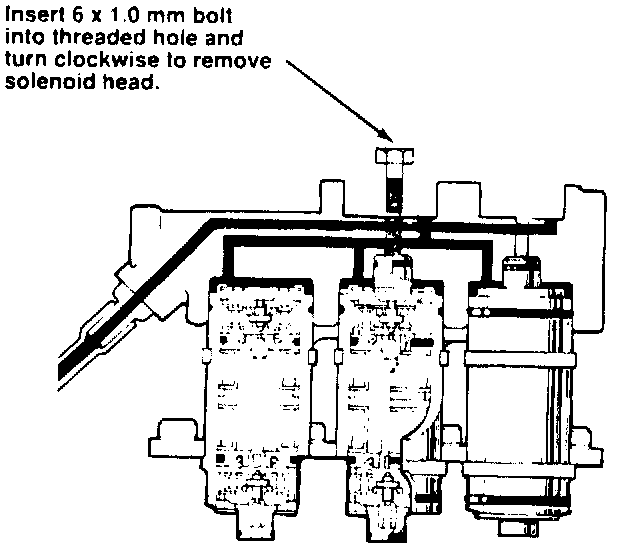
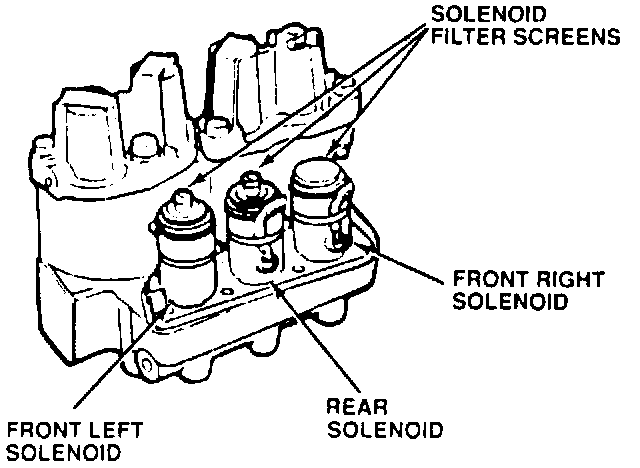
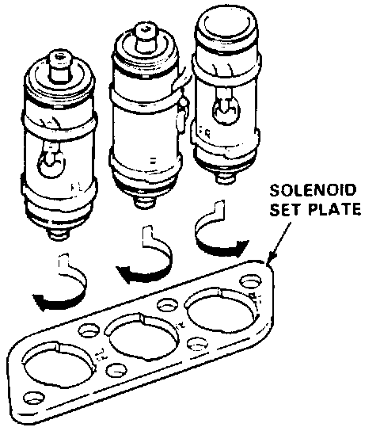
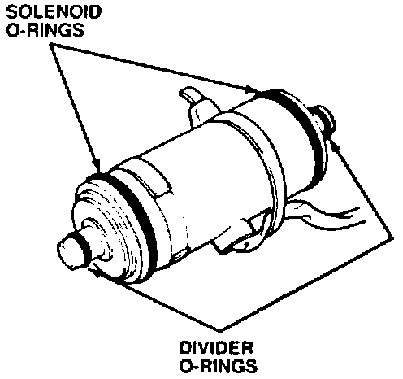
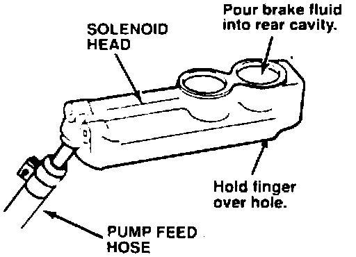
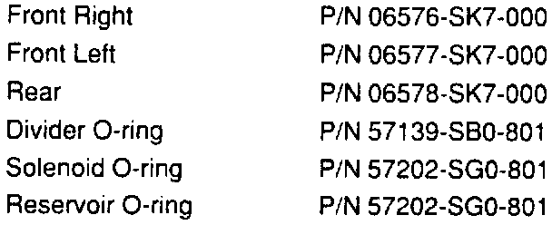
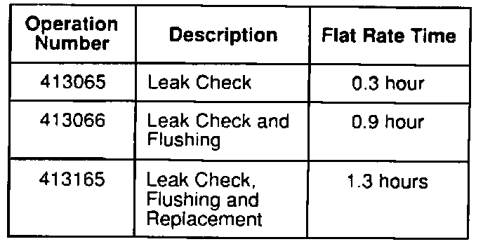

Brakes - ALB System MIL ON Problem Code 1
July 22, 1991BULLETIN NO
91-038
YEAR
'90 - 91
MODEL
INTEGRA GS
VIN APPLICATION
ALL
Anti-lock Brake System Problem Code 1/Leaking Solenoid
SYMPTOM
The ALB light comes on and the ALB control unit indicates Problem Code 1. In some cases, the top of the ALB modulator reservoir may be wet with brake fluid.
NOTE:
This bulletin addresses a possible cause for ALB Problem Code 1 that is not covered in the service manual.
The LED on the ALB control unit displays problem codes once, each time the ignition switch is turned on. The code appears 10 seconds after the ignition switch is turned on. Have an assistant turn the ignition switch on while you watch the LED.
PROBABLE CAUSE
A leaking modulator solenoid that prevents the pump from pressurizing the accumulator to the prescribed level within the pump running limit of 120 seconds.
CORRECTIVE ACTION
Perform a solenoid leak check and, if necessary, flush or replace the solenoids.
Solenoid Leak Check
1. Place the car on level ground with the wheels blocked. Put the transmission in neutral (M/T models) or Park (A/T models).
2. Record the fluid levels in the modulator and the master cylinder reservoirs.
3. Remove the ALB B2 fuse from the under-hood relay box for at least three seconds to erase the control unit's memory. Reinstall the fuse.
4. Remove the modulator reservoir filter.
5. Connect the ALB Checker, T/N 07HAJ-SG0010A or B, and turn the Mode Selector to "1."
6. Start the engine and release the parking brake Push the Start Test button on the ALB Checker.
^ If the ALB pump runs, note when it starts, and quickly go to step 7.
^ If the ALB pump doesn't run, the cause of the Code 1 has corrected itself. Refill the modulator reservoir to the MAX level, and return the car to the customer.
7. While the ALB pump is running, place your finger over the top of the solenoid return tube in the modulator reservoir. Note when the pump stops.
^ If you can feel brake fluid coming from the return tube, one of the solenoids is leaking. Go to Solenoid Flushing.
^ If you feel no fluid coming from the return tube and the pump runs for less than 120 seconds. the cause of the Code 1 has corrected itself. Refill the modulator reservoir to the MAX level, and return the car to the customer.
^ If you feel no fluid coming from the return tube. and if the pump runs for 120 seconds (ALB light comes on. LED indicates Code 1), call Engineering Tech Line with the fluid levels you recorded in step 2.
Solenoid Flushing

1. Remove the ALB motor relay from its bracket on the left-front inner fender.
2. Insert the GRN and BLK terminals from the Auxiliary Window Switch, T/N 07KAZ-001000A, into the two front terminals (WHT/BLU and WHT/RED) of the motor relay connector.
3. Disconnect the three modulator solenoid connectors.
4. Connect the RED terminal from one solenoid to the battery positive (+) terminal with a remote starter switch. Connect the BLK terminal from the same solenoid to the battery negative (-) terminal with a jumper lead.
5. Bleed any high pressure fluid from the maintenance bleeder with the Bleeder T-Wrench, T/N 07HAA-SG00101, then retighten the bleeder.
6. Press the auxiliary switch to run the pump. After the pump has run for about five seconds. press and release the remote starter switch three or four times to open and close the solenoid. Continue running the pump for about 30 seconds, then release the auxiliary switch and open and close the solenoid another three or four times.
7. Repeat steps 4-6 for the other two solenoids.
8. Reconnect the solenoids and the pump relay.
9. Connect the ALB Checker and turn the Mode Selector to "1." Start the engine and release the parking brake. Push the Start Test button on the ALB Checker.
10. While the ALB pump is running. place your finger over the top of the solenoid return tube in the modulator reservoir and check for leaks.
^ If the solenoid leakage has stopped, refill the modulator reservoir to the MAX level. and return the car to the customer.
^ If a solenoid is still leaking, go to Solenoid Replacement.
Solenoid Replacement
NOTE:
Before disassembling the modulator, clean and blow-dry the area around the modulator.
This procedure can also be used to replace a leaking solenoid O-ring.
1. Bleed high pressure fluid from the maintenance bleeder with the Bleeder T-Wrench, then retighten the bleeder.
2. Remove the brake fluid from the modulator reservoir (without removing the pump feed hose from the solenoid head).
3. Disconnect the three solenoid connectors and remove the solenoid connector bracket.

4. Cover the relay box with a clean shop towel to protect it from brake fluid. Remove the two screws from inside the modulator reservoir, then remove the reservoir from the solenoid head. If brake fluid contacts the paint, wash it off immediately with water.

5. Thread a 6 x 1 x 50 mm bolt (or longer) into the threaded hole nearest the front of the modulator. Turn the bolt clockwise until you can lift the solenoid head off of the solenoids. Set the solenoid head off to the side without disconnecting the pump feed hose.
6. Remove the solenoid harness grommets from the solenoid cover, then remove the cover.

7. Remove the ALB pump relay from the relay box. Connect the Auxiliary Window Switch as described in step 2 of Solenoid Flushing. While watching the filter screens on top of the solenoids, run the pump for two or three seconds. Brake fluid will flow from the filter screen of the leaking solenoid.
8. Open the maintenance bleeder with the Bleeder T-Wrench. Loosen all of the solenoid set-plate bolts. Remove the bolt nearest to the leaking solenoid's harness.

9. To remove the leaking solenoid, first push it down to unstick the O-rings, then pull it up while holding the set-plate up slightly. Turn the solenoid in the direction shown until it can be removed.

10. Coat the new O-rings with clean brake fluid, then install them on the new solenoid.
11. Apply a film of clean brake fluid to the solenoid body and O-rings, then carefully install the solenoid in the modulator body.
12. Reinstall the set-plate bolt that you removed in step 8, then tighten all the set-plate bolts until snug. Torque the set-plate bolts to 15 N-m (1.5 kg-m, 11 lb.ft.).

13. Close the maintenance bleeder with the Bleeder T-Wrench. To refill the pump feed hose, hold your finger over the hole in the bottom of the solenoid head rear cavity, then pour some brake fluid into the rear cavity.
14. Run the pump for two or three seconds and check the solenoid for leaks. If it leaks, bleed off the high pressure fluid, then remove the solenoid and recheck the O-rings for damage.
15. Clean and reinstall the solenoid cover, reposition the solenoid harnesses, then insert the harness grommets.
16. Clean the solenoid head bores with contact cleaner. Apply a film of clean brake fluid to each bore, then reinstall the solenoid head.
17. Remove and discard the modulator reservoir 0-rings. Coat new 0-rings with clean brake fluid, then install them on the reservoir. Reinstall the reservoir on the solenoid head.
18. Reconnect the solenoid connectors. Reinstall the relay box, pump relay, solenoid connector bracket, and horn bracket.
19. Refill the modulator reservoir to the MAX level.
20. Connect the ALB Checker and turn the Mode Selector to "1." Start the engine and release the parking brake. Push the Start Test button on the ALB Checker.
21. Refill the modulator reservoir to the MAX level. Run through modes 3, 4, and 5 with the ALB Checker, then bleed the high pressure fluid from the maintenance bleeder with the Bleeder T-Wrench. Repeat this three or four times.
22. After bleeding the high pressure fluid the last time, run through mode 1 with the ALB Checker, then refill the modulator reservoir to the MAX level.
PARTS INFORMATION

Solenoid Kit (Consists of the solenoid and the O-rings):

WARRANTY CLAIM INFORMATION
In warranty: The normal warranty applies.
Out-of-warranty: Any repair performed after warranty expiration may be eligible for goodwill consideration by the District Service Manager. You must request consideration, and get the DSM's decision, before starting work.
Failed P/N: P/N 06576-SK7-000
Defect code: 060
Contention code: B99